SARA：把用户亲口表达的偏好理由扩展成推荐特征
快手团队的《Scaling Articulated Rationales for MLLM-based Recommendation》研究怎样把稀疏的自然语言偏好理由，变成覆盖千万主播、可每日更新并供工业排序消费的特征。论文署名为 Kuaishou Technology，贡献列表列出 Haoke Xiao、Xiang Chen、Yueyang Liu 等分别负责数据、生成模型和排序系统。预印本首次公开于 2026 年 9 月 15 日，文稿日期为 9 月 10 日。论文入口：arXiv:2609.17639。本轮未核验到该工作独立的代码、权重或数据集公开入口。
点击、观看时长和负反馈说明用户做了什么，却不能充分说明用户为何喜欢或拒绝内容。用户亲口表达的理由又十分稀疏、质量参差；直接让通用多模态模型补写，可能得到流畅但缺少真实偏好依据的事后解释。
1. 背景和问题
1.1 行为标签遗漏了怎样的语义
直播推荐中的一次长观看可以来自完全不同的原因：用户可能喜欢主播的专业演示，也可能需要陪伴，还可能只是等待抽奖。一个“不感兴趣”也可能指向过度营销、危险表演、音量不适或内容重复。传统日志记录了行为、时间和对象，却通常没有给出行为对应的细粒度语义。模型可以通过大量共现数据拟合谁会看谁，但遇到新主播、稀有负反馈或表面相似而体验不同的内容时，单纯靠作者身份和行为相似度迁移就容易丢失区别。SARA 把这种区别称为理由级信号，重点是用户对一个明确偏好决定的自然语言解释。
多模态内容理解能补充场景、人物、动作、声音、台词和主题，却仍不等于偏好理解。例如两个直播间都可概括为“外貌主播聊天”，一个以传统服饰和歌舞吸引观众，另一个依靠节奏激烈的互动。仅仅提升视觉编码器质量、给出更长的内容描述，未必让排序模型知道哪一类因素对应当前用户。评论也不天然解决这个问题，因为评论可能在闲聊、玩梗或回应其他观众，并没有和“喜欢或不喜欢这个作者”的选择一一绑定。论文因此先询问正负态度，再追问原因，把极性与开放文本连在同一条采样链路中。
这里的 articulated user rationales，简称 AUR，是用户表达的理由，不是大模型内部的思维链，也不是排序模型输出后的解释模板。原生 AUR 的特殊价值来自监督来源：它至少表明有人在具体直播上下文里以这样的语言表达偏好。SARA 并不由此获得不可争辩的因果真相。人会含糊、冲动或受到奖励影响，语言也可能包含夸张和无依据指责，因此后续的数据审核是信号定义的一部分。把任何“看起来像原因”的句子直接当成高质量标签，会让内容理解与偏好解释之间的缺口以更自然的语言隐藏起来。
1.2 从稀疏问卷到作者共享理由
论文提出三个连续障碍。第一，用户最自然的行为是划走或沉默，专门写理由是低概率动作；引言提到低于百分之一的典型覆盖，但它引用参与不均衡的一般经验，不能直接当作本次平台实测的问卷转化率。第二，收集到的理由大量口语化、碎片化，简单赞美或情绪词缺乏能跨对象迁移的细节。第三，通用多模态模型即使看到行为结果，也不知道用户真实的心理过程，容易根据画面和极性生成合理化解释。解决前两项后形成的真实语言监督，才是缓解第三项的依据，而不是让模型自行生成更多句子就能闭合的数据循环。
尤其要辨清论文中不同规模数字的分母。所谓面向两亿四千万用户开展数据引擎，是系统覆盖或触达范围，不是两亿四千万用户填写了有效问卷。最终高质量数据对应十四万余名实际作答用户和八万余名作者。平均每个用户只有约一点三三份问卷，无法据此稳定建立个人“理由画像”；平均每个作者收到约二点一七条回答，团队因此按作者和极性聚合，把同义、零散表达归一成可使用的理由标签。这是一个出于稀疏性作出的明确建模取舍：原始证据发生在用户—作者关系上，但扩展后的生成目标主要位于作者侧。
这个取舍决定了如何理解最终推荐能力。SARA-7B 的输入没有指定用户身份，只包含作者的多模态上下文和正负极性，因此生成的正向或负向理由由这个作者的所有观众共享。它可以表示“这个作者可能因为哪些因素吸引人或令人不适”，不能直接声称“这个用户昨天就是因为这一条理由点了不感兴趣”。真正的个性化仍由排序模型结合用户画像、交互和历史完成。正向分支把共享理由当语义锚点，约束用户—作者表示；负向分支把作者的负面语义挂到历史拒绝对象上，实现跨作者参数共享。这两种机制都保留了行为标签与解释性特征之间的分工。
1.3 相邻任务的区别与证据要求
论文对比的公开直播数据说明，数据多并不代表监督相同。LiveRec 和 KuaiLive 主要提供共现或交互日志；KuaiLive-M3 同时有行为与问卷，但文中所比较的基准实验主要使用问卷第一问的类别偏好，第二问开放回答不是其有效监督目标。LiveCC 和 OmniStar 更接近直播描述与问答，LiViBench 注重多模态问答，LiveLongBench 侧重长语音上下文理解。这些资源能帮助模型理解发生了什么，但不是按正负偏好生成具体理由。不同表中的用户、互动、视频、题目、问卷和理由不可直接相加，也不能因为一个资源的数值较大就断言其训练价值更高。
SARA 的完整研究主张因此需要分层验证。数据层要说明有效理由数量、保留率与覆盖偏差；评审层要证明自动评分与人类判断接近，而不只是评分看起来复杂；生成层要证明未见作者上仍能产生具体且有依据的理由；排序层要用行为目标和在线实验检验新增文本有没有真正带来增量。一个层面的成功不能自动替代下一个层面：理由与问卷相似不等于在线收益，线上拒绝率下降也不直接证明每条理由都是用户真实动机。本文有价值的地方是尝试把这些环节都落到实际系统，阅读时也必须让每一个结论停留在其对应证据范围内。
直播场景还带来时间变化：同一作者今天唱歌、明天带货，当前理由不一定长期有效。论文采用每日刷新作者理由，因此它与离线一次性商品标签不同，监督样本、作者上下文和线上特征需要在时间上衔接。负反馈历史却可能来自更早的内容状态，将旧拒绝对象关联到新生成的作者语义时可能改变含义。公开实验尚未量化这种变化造成的误差，阅读时应把“日更覆盖”看作更新机制，而不是默认所有历史行为已有正确且同步的理由解释。
2. 方法
2.1 采集和质量整理
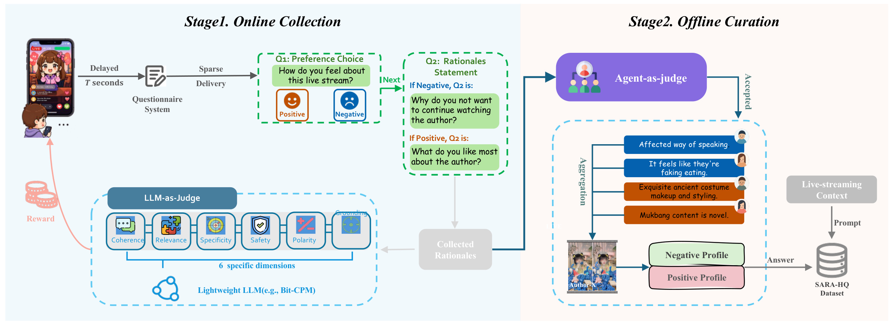
原图左侧从直播上下文进入问卷系统，依次经过延迟触发、稀疏投放、正负选择和理由输入；下面的轻量评审器把实时回答映射为奖励资格。右侧接收原始回答，通过离线评审再聚合出作者的正负理由画像，最后与直播上下文配成训练样本。两条评审路径分开的意义很具体：在线判分需要尽快反馈激励结果，离线整理可以付出更多推理成本检查证据。原图的箭头没有表示先按在线得分永久丢弃低分回答，论文明确说离线流程直接检查原始回答，不把在线分数作为筛选输入。因此实时误判不必成为后续训练监督的不可逆入口。延迟设为观看十秒后触发，是在形成稳定印象与避免负面用户过早离开之间折中；它同时意味着迅速离开的强烈负面体验可能采不到。稀疏投放则用于控制打扰和问卷疲劳，基础概率来自百分之一到百分之二十的候选测试，最后选择百分之五，并按最近五分钟的响应率调整。图中奖励返回用户，目的在于鼓励有信息的表达，不能把奖励数目当成偏好强度。奖励的门槛是综合质量三级或四级，奖励本身也可能改变作答人群与措辞，需要在数据分布分析中保留这个条件。
离线聚合不是替所有作者生成一个绝对正确的性格标签。通过的短句先按作者及极性分组，再归一为原子语义标签；近义表达合并、冗余删除，标签应能回指保留下来的真实回答。图中同一个作者有正负两个画像，允许不同观众对同一内容作不同解释。比如一段爆竹表演可以同时对应热闹、互动与危险、噪声，模型最终学的是在指定极性下选择被上下文支持的原因。原始问卷仅用来构造目标答案，不能混入输入，否则生成任务会退化成复述标签，未见作者扩展的实验意义也会被破坏。
符号解释：P 是问卷投放概率，基础概率 p_0 为百分之五，r_obs 是最近五分钟观察到的响应率，目标响应率 r_target 为百分之十二，下上界分别为百分之一和百分之二十。响应积极时增加曝光，响应低时减少打扰；这不是随机均匀采样，更不是自动纠正样本选择偏差的逆概率权重。在线综合分大于二获得少量快币奖励；离线综合分大于二的回答进入高质量监督池，两次判分的模型与用途不同。
符号解释：V 是采样直播帧，后三项文本分别是元信息、语音识别和观众评论，I_p 指定正向或负向的提问指令，r_p 是由对应问卷蒸馏归一的目标理由，数据集由这些输入目标对组成。这里的评论是可见直播上下文，原始问卷答案被排除在输入之外；两者来源和作用不能混写。
2.2 理由定向对齐
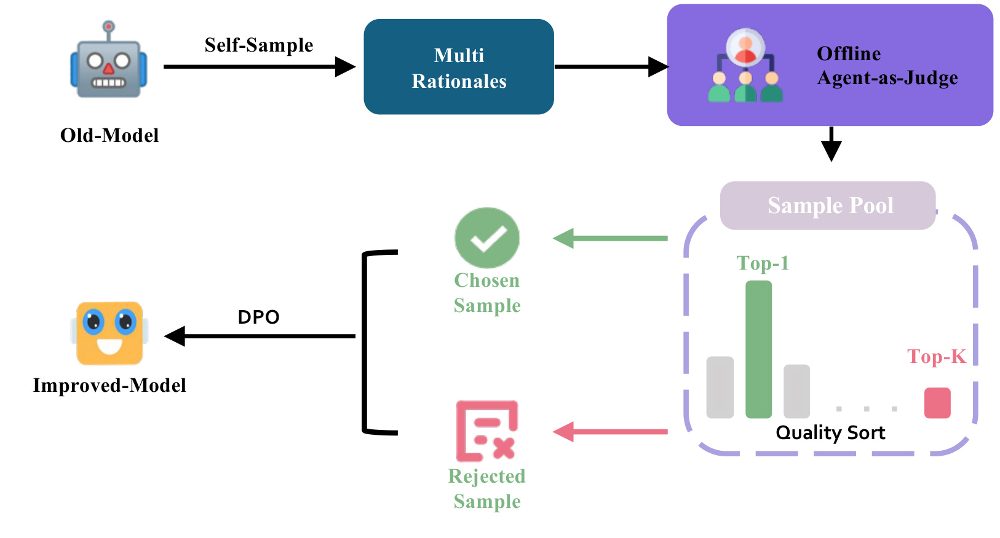
图中旧模型先生成多条候选理由，离线代理评审给这些候选排序，从最好和最差两端取出偏好对，再进行直接偏好优化得到改进模型。图上写的 Top-K 指排序最后的第 K 名，而不是从前 K 个好样本随意拿一个拒绝样本；正文已经明确最高名次为 chosen、最低名次为 rejected。这个区别会改变训练信号的难度与语义：它希望扩大好理由与坏理由的差别，不是在两个质量相近的最优答案之间逼迫模型学习细微文风偏好。候选评估的输入始终带原直播上下文和所要求的极性，不能脱离视频只判断句子是否流畅。进入这张图以前，模型先用完整高质量数据对 Qwen2.5-VL-7B 做全参数监督微调，让基础模型学会从多模态内容生成作者侧理由。第二阶段从监督训练集里选七千位热门作者构造偏好数据，每个实例采样多个候选，评审使用连贯、相关、具体、安全、极性和依据六个维度。七千不是新收集了七千个完全独立领域，也不是测试作者；最终质量测试另用作者不重叠的数据。图的循环形式说明该过程原则上可迭代，但论文的结果不等于已经证明无限迭代会持续改善，后续分布变窄或追逐评审偏好仍可能发生。
这条路线没有新增一种替代 DPO 的优化目标，主要贡献在于什么数据形成 chosen/rejected，以及评审怎样识别有依据的细节。图中质量排序不把模型自述的信心直接当奖励，选择依据来自领域标注校准的离线评审。训练策略从监督模型初始化，并冻结同一监督检查点作为参照；理由文本对数概率相对于参照的变化决定隐式奖励。若评审偏爱更长但无法核实的描述，DPO 同样可能强化这种偏差，因此六维评分中的依据约束与独立作者测试是必要配套。更具体的语言只有在没有越过视频、评论和语音证据时才构成改进。
符号解释：N 是单个目标理由的 token 数，r_t 与 r_<t 分别是当前 token 和前缀，X 为多模态及极性条件，π_θ 为待训练模型。这是标准自回归负对数似然；理由的真实性来自监督构造和审核，不由交叉熵本身保证。
符号解释：y^+ 和 y^- 是同一上下文下最高与最低质量候选，π_ref 是固定的监督微调模型，β 控制偏好优化强度，σ 是 sigmoid，期望覆盖七千个偏好实例。两项概率都是整段候选在相同条件下的概率，目标拉大相对偏好间隔；不能把隐式奖励当成真实用户满意度的测量值。
2.3 质量评审如何守住证据
原文在对齐之后展开共用的评审框架。在线轻量模型一次推理预测六个维度与综合等级；离线则由六名维度专员各自输出分数和证据，再交给 Senior Reviewer 汇总。专员可以共享经过领域适配的基础模型，通过不同指令承担不同角色，并不要求六个完全无关的大模型。高级复核收到匿名化的分数证据集合，先检查严重缺陷，再区分可接受与优秀。在线模型只服务激励，离线评审的隔离实例分别服务清洗、偏好构造与最终质量测量，降低了用途混淆，但共享规则仍意味着需要警惕共同评审偏差。
符号解释：q_d 是某一质量维度的一到四级评分，G 是综合可用性等级，硬维度集合包含相关性、安全性、极性一致性和多模态依据。任何硬维度有实质缺陷，都不能靠流畅或具体把平均分抬过合格线。比如一句非常具体的医学功效描述若没有上下文支持，即使其他维度高分也要拒绝；这一规则约束的是理由能否进入数据与偏好监督，不是证明视频里说的医学主张在现实中成立。
训练评审器需要专门的人类语料。样本来源包括原生回答、不同模型和检查点的生成理由，以及上下文错配、极性颠倒、泛泛描述、注入无依据细节等受控失败。受控变换只制造待检查的难例，专家要验证变换并标所有受影响维度，不能默认自动生成的标签正确。划分发生在候选生成和增强之前，按作者与直播上下文隔离；标注时隐藏候选来源，以减少某个模型名称带来的先验偏好。在线训练由维度损失与整体损失组成，专员学习对应的分数证据，高级复核学习人工证据集合到综合等级的映射。运行时用专员预测替代人工报告，这里仍存在训练输入较干净、实际专员会犯错的分布差异。
2.4 理由特征进入排序
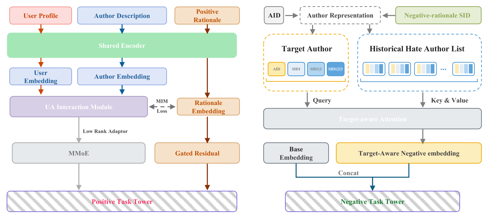
原图左半部分把用户画像、作者描述与正向理由送入共享编码器，用户和作者经交互模块形成关系表示，再与理由表示做语义对齐。主表示流向 MMoE 多任务网络，理由还有一条门控残差通道直接到任务塔。共享的作者理由因此既是辅助监督，又是排序输入，不能把收益全部解释为单独一项对比损失。用户端和作者端仍有自己的输入，避免所有看同一作者的用户被硬性赋为完全相同的兴趣向量；但共享理由可能包含多个吸引点，辅助目标并没有逐条标明某个用户究竟选择了其中哪一点。右半部分从作者身份和负向理由语义码构造作者表示，把历史点过不感兴趣的作者列表作为键和值，目标作者作为查询进行注意力聚合。不同目标可以关注同一历史中的不同拒绝对象，得到目标相关的负反馈表示，再与旧塔输入拼接。层级语义码使不同作者共享某些前缀嵌入，稀有负反馈才有机会跨作者传递；作者 ID 同时保留个体记忆，避免把所有相似内容完全合并。这里的负向理由来自作者侧生成，并非历史每次拒绝的用户口述，图中也没有额外的用户理由标签，因此它提供语义关联，不能冒充对个人拒绝原因的确定识别。
两路设计处理的反馈密度与目标不同。正向理由通常对应观看、点击、礼物等较丰富行为，用可训练文本表示对用户—作者匹配提供细粒度约束；负向目标极稀疏，离散共享码能把已有反馈传播到相近对象。原图把正负任务塔并列，表明它们是工业排序的特征增强，没有把线上服务替换为七十亿参数模型实时生成推荐列表。生成与每日刷新主要在作者特征侧完成，在线路径仍使用嵌入、轻量编码和原排序结构。论文称能留在原延迟预算内，但并未公布足以计算整套离线生成、存储和刷新的总成本明细。
符号解释：X_u、X_a、X_r 分别是用户画像、作者描述与正向理由，Tok 分词，E_x 是各自的可训练稀疏词嵌入表，B_shared 为共享编码器，H_x 与 CLS 状态为序列与汇聚表示，MHA 是多头注意力算子，c_u,a 是双向残差交互求和。具体实现词向量六十四维，三路长度分别一百二十、七十、六十四 token，共享四层编码器每层一头，前馈维也为六十四；这里不应误读成线上调用完整 SARA-7B。
符号解释：Z_ua 与 Z_r 是关系表示和理由 CLS 分别经线性投影再逐行二范数归一得到的批表示，τ 为零点零七，ρ 表示逐行 softmax，S 是匹配 logits，Q 是理由之间相似度导出的软目标，CE 为按批平均的交叉熵，λ_MIM 控制辅助项权重。相似理由在批内不是一概负例，因此软标签给非对角项分配概率；原式两方向均使用 Q，不能擅自替作者改成硬对角标签。作者以互信息最大化为动机，但这里具体可复用的是对称软对比损失，不是直接计算真实心理动机与行为的互信息。
符号解释：R_a 是作者理由文本，E_BGE 是文本编码器，e_a 是连续向量，r_a,l 是当前残差，c_l,k 为第 l 级第 k 个码字，s_a,l 是选择的索引，K_l 是码本大小。三级残差量化逐次近似剩余信息，每一级不是独立完整语义类别，因而直接把第二级索引当全局主题会混淆不同父路径。
符号解释：三级采用相同码本大小 K，p_0、p_1、p_2 分别编码第一层、两层前缀和完整路径；这是各自特征空间内的 K 进制唯一索引。这里 p_0 与采集概率公式中的基础概率只是原文不同模块的符号复用，含义完全不同。累计前缀让共享遵循粗到细的语义路径，末级残差相同而前级不同的作者不会错误共享完整路径嵌入。
符号解释：x_a 拼接作者身份与三级负理由前缀嵌入，双竖线表示拼接，X^-_u 是用户按顺序记录的拒绝作者表示矩阵，目标 x_a 作查询，h^-_u,a 为目标感知的负反馈汇聚。最后将该向量与原负反馈塔输入拼接预测，不改变 Hate 是点击不感兴趣这一行为定义。码本聚类的距离和真实用户拒绝因素未必一致，语义传播是否误伤相似但可接受的作者，要依靠线上分层诊断验证。
3. 实验结果
3.1 数据规模与选择偏差
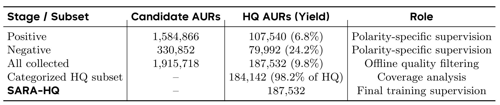
表中候选、通过审核的理由以及最终监督池是三个不同概念。原始正向回答一百五十八万余条，保留十万七千五百四十条，保留率百分之六点八；负向回答三十三万余条，保留七万九千九百九十二条，保留率百分之二十四点二。合计一百九十一万五千七百一十八条原始回答中留下十八万七千五百三十二条，高质量率约百分之九点八。负向候选明显少于正向，但经过质量门槛后差距收窄，说明原始量大不意味着有更多能用于理由学习的有效信息；大量宽泛表扬被过滤，指向具体缺陷的表达更容易通过。
表的 categorized 子集包含十八万四千一百四十二条，占高质量池百分之九十八点二，主要用于覆盖分析；它不是在高质量池之外又新增的一批数据。最后一行 SARA-HQ 重复给出最终训练监督规模，也是命名而非额外采集量。观察窗口是二月十二日至八月三十日，累计一百八十五个实际采集日，因此日均约一万零四百条候选，不能直接把整个自然日跨度作为活跃天数重新推导另一套日均口径。被覆盖作者八万六千五百六十四名，而后来千万作者理由是模型扩展结果，二者之间的数量鸿沟正是生成模型承担的任务。
这些统计支持数据引擎能稳定产出相当规模的领域监督，却不能单独证明样本具有平台总体代表性。十秒触发排除了部分快速离开，响应率驱动投放又偏向愿意回答的时段，快币奖励可能吸引特定用户群。正负不同保留率还会改变极性分布，最终训练集不是原始体验比例的无偏估计。论文没有在这张表里报告随机邀约对照、无奖励对照或逆倾向加权后的效果，所以不能把百分之九点八解释为用户理由的客观真值比例。它准确表示的是在本次采样和特定离线规则下通过审核的比例。
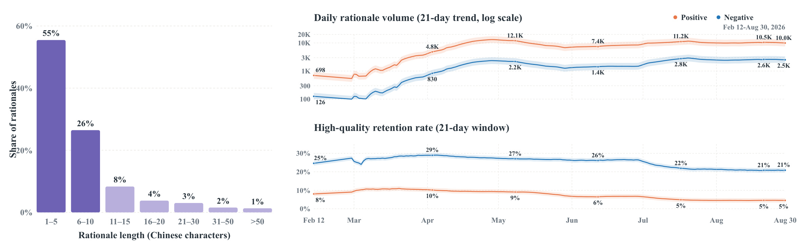
左图展示六千一百三十四条分段理由的中文字符长度，不是全部十八万余条目标答案的完整分布。最高两档是一到五字和六到十字，标注约百分之五十五与百分之二十六；正文给出的不超过十字比例为百分之八十二，图中文字百分数有四舍五入，不能把两根柱子相加后据此指责总数据矛盾。中位数五字、均值八点二五字说明短表达占多数，因此作者级同义归一和聚合有现实依据。这也意味着短句里可能有有价值的原子因素，不能仅按长度阈值把简短回答全删掉。
右上是二十一天趋势的日候选量，纵轴使用对数尺度，橙色正向、蓝色负向。后期大约每天一万正向、两千五百负向；视觉上两条线距离并不等于线性倍数变化。右下采用百分比尺度，显示同一平滑窗口的高质量保留率。随着量增长，正向保留率降到约百分之五，负向约百分之二十一，提示新增候选的边际质量并没有随规模自动提升。阴影是局部波动，论文没有把它定义成统计置信区间，因此不能用阴影是否重叠判断显著性。
图与总表共同说明规模和质量要一起看：即使筛选通过率回落，总有效量仍可能因候选量增长而增加；反过来，为提高保留率而把投放只集中在熟悉作者，也可能损害覆盖。作者另外报告十八个一级领域、一百四十一个二级类别，并在语义分布图展示符合条件领域里最大的四类；可见六十个类别中，正向四十六类、负向三十七类超过两百条。这证明长尾没有完全消失，却并不意味着所有类别数据均衡。词云中正向集中在互动、氛围、表演和真实感，负向集中在粗俗表达、脚本感和过度商业化，描述的是收集到的语言结构，不能把词云当成因果效应或绝对发生率。
3.2 评审器校准
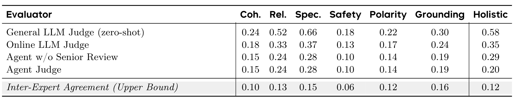
每列都是与专家一到四级标注的平均绝对误差，越小越好，而不是评分越高越好。第一行通用零样本评审与第二行领域训练后的在线评审使用相同基础模型和规则，因此整体误差从零点五八降到零点三五，主要支持领域校准的重要性。具体性误差从零点六六降到零点三七，相关性从零点五二降到零点三三，恰好对应“会写流畅句子但不一定理解理由质量”的薄弱处。安全和极性本来误差相对低，所以这一表也没有支持通用评审所有方面都很差的强说法。
最有辨识力的消融是第三、四行。两行六个维度分数完全相同，因为它们来自同一组专员；区别是第三行直接平均六维得到综合分，第四行使用高级复核。综合误差从零点二九进一步降到零点二零，说明非补偿式证据汇总比简单平均更接近专家。它不是六个专员分别变得更准后再次叠加的收益，更不能把两行维度相同当成表格遗漏。专家之间的综合误差为零点一二，提供实际标注噪声参照；作者称其为上界参考，在误差尺度上应理解为理想一致性的较低误差参照，而非数学上不可突破的绝对边界。
评审测试集按作者隔离，并包含自然回答和单一关键缺陷难例，有助于检查是否能识别极性反转、编造细节等问题。仍需保留两个限制：论文没有在表内列出逐类别样本数、置信区间或错误分布，平均误差可能掩盖少数严重漏检；训练偏好和最终理由测量共享同一套领域规范，即使参数冻结也可能对模型形成相近偏好。因此表的结论应是“更接近这套人类标注标准”，不应扩大成“生成理由已全面客观正确”。对依赖该评审长期扩充的数据系统，周期性人工抽查硬维度误放尤其重要，因为少量错误可能被后续生成反复放大。
3.3 理由生成与扩展
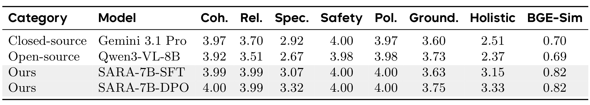
评估集由更晚生产日志构造，共五千实例，与监督及偏好训练作者不重叠，同时平衡极性、类别并按作者热度分层。所有模型看到相同多模态上下文与极性指令，输出简短的用户视角理由。前七列为固定离线评审的一到四级分数均值，最后一列为冻结 BGE 对生成理由与配对原始问卷的余弦相似度。这个设置比直接在训练作者上看例子更能支撑从八万多作者向未覆盖作者扩展，但它仍是特定直播任务，不是不同模型通用能力的总排名。
SARA 监督模型相对 Gemini 3.1 Pro 和 Qwen3-VL-8B 的优势集中在理由相关的维度：相关性接近四分，整体从两个通用模型的二点五一、二点三七提升到三点一五，相似度从零点七零、零点六九提高到零点八二。通用模型在连贯、安全、极性已经很高，说明差异主要不来自基本语言能力。依据维度也值得细看：Qwen3-VL 的三点七三其实高于 SARA 监督版的三点六三，不能声称仅靠监督微调就逐列超过所有基线。经过偏好精炼后依据达到三点七五，才略高于该行参照。
比较 SARA 两行能更直接定位 QR-DPO：具体性三点零七到三点三二，依据三点六三到三点七五，整体三点一五到三点三三；相似度仍为零点八二。提升主要是更具体、可用而有证据的理由，而不是更贴近原始问卷的整体语义向量。BGE 相似不能替代质量评审，因为一个合理改写也可以分低，一个语义接近但混入编造细节的回答也可能分高。原文定性例里涉及医疗、金融或营销判断，本笔记只把它们作为模型输出模式观察，不验证其现实专业结论；筛选过的示例也没有给出一般错误率，必须和作者隔离的定量表一起读。
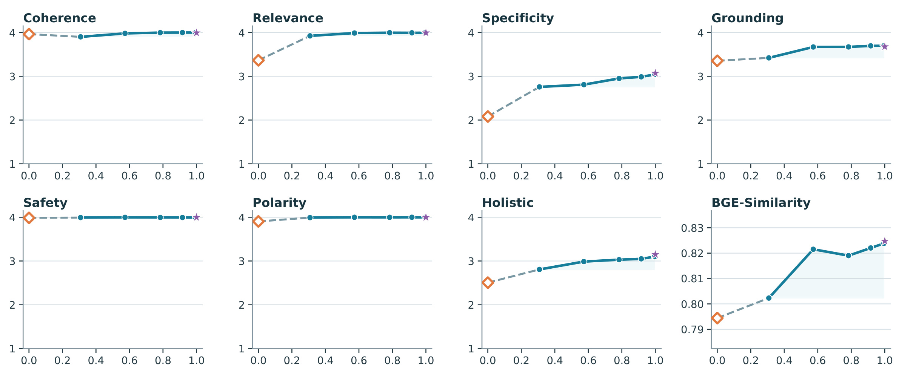
八个子图共用零到一的横轴，原文把它解释为监督数据规模比例，不能把横坐标直接当训练轮数或绝对问卷数。前七个图使用一到四级质量尺度，最后一图用范围很窄的 BGE 相似度坐标，因此视觉斜率不能跨面板比较。连贯、安全和极性很早接近天花板，相关性从较低起点迅速改善；具体性、依据和综合质量还有更明显的增长空间。这种结构符合训练任务：基础模型已有语言和指令能力，领域问卷主要教会它哪些细节真正构成理由，并以何种方式绑定当前直播证据。
图中具体性随着更多数据逐步提高，整体分的增幅也主要来自这些非天花板维度。但不能把作者“总体改善”的描述转成所有曲线严格单调。BGE 相似度在约零点五五到零点七五之间有下降，连贯也有轻微波动，依据曲线后半段趋平。图里没有为每个采样比例列出不同随机种子的方差，阴影含义也未给出完整统计定义，因此局部高低不能据此解释成稳定拐点。最保守的结论是更多领域监督通常帮助理由质量，未证明在其他分布上扩大同样比例会获得相同增量。
对于继续建设数据引擎，这张图提出的是分配采集资源的问题。若连贯和安全已经饱和，增加大量模板化正面夸赞很可能只是扩充数量；真正受益的维度需要具体、稀有并可核验的偏好因素。负向理由的高保留率和正向理由的低信息密度，提示应按类别及质量缺口采样，而不是单看日采集条数。也不能把图外推到千万作者都达到相同质量，因为横轴改变的是训练监督，测试仍只有五千实例。后续如果报告尾部作者、冷启作者或新内容形式的分层曲线，会比进一步增加一个全局平均更有助于判断覆盖扩展是否可靠。
3.4 偏好训练与编码诊断
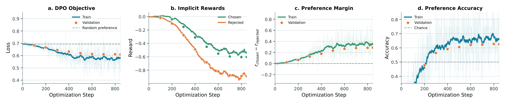
四个面板分别画训练目标、隐式奖励、偏好间隔和偏好准确率，横轴是优化步数。左图损失从随机偏好附近约零点六九逐渐降到更低，训练线和验证点大方向一致；第三图间隔逐渐转正，第四图的偏好准确率越过随机猜测的零点五。这些指标共同表明模型能学习评审给出的成对排序，而且不是只在训练对上出现同方向变化。它们验证优化过程工作正常，仍不能直接等同于真实推荐点击或拒绝改善，因为优化标签来自理由质量评审，服务目标要另看排序实验。
第二个面板尤其容易误读。chosen 与 rejected 的隐式奖励都变得更负，只是 rejected 下降得更快，于是差值增大。DPO 目标依赖相对参照的对数概率差，偏好间隔改善并不要求 chosen 的绝对隐式奖励单调上升。把曲线讲成“奖励不断提高、模型更喜欢好答案”会遗漏概率重分配和整体概率变化这一层含义。图中验证奖励与训练趋势大体相符，后半段也存在波动；没有必要把有限训练步内的变化叙述成严格收敛定理。
这套诊断与 Table 4 配合才形成较完整证据。仅看 margin，可能是模型更强地排斥差答案但没有在新上下文产生更好内容；仅看评审均值，又不知道偏好数据的学习是否稳定。两者都改善支持本文的精炼路线，但论文没有分别消融候选采样数、选择最好对最差与其他配对方式、不同评审预算或多轮自迭代。七千偏好实例选自热门作者，也可能限制特殊尾部内容的改进幅度。因此可复用的是监督后追加领域质量偏好的做法，具体训练收益仍依赖候选差异是否有信息、评审是否对内容敏感，以及偏好数据是否覆盖实际服务中的作者类型。
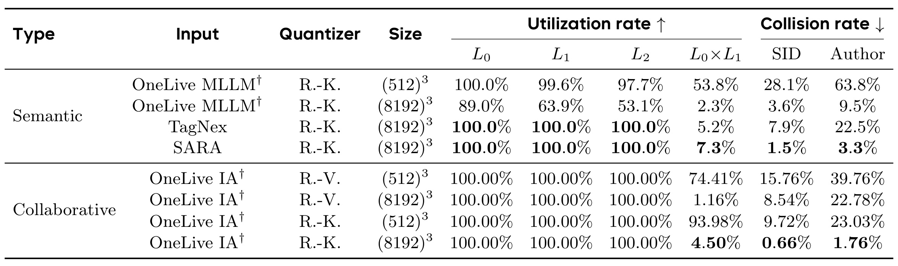
表按语义输入和带协同监督的输入分组，列出量化方法、三级码本规模、各层利用率、前两层组合利用率，以及 SID 和作者层面的碰撞率。比较必须同时固定码本与量化器：在相同三级八千一百九十二码字、残差 K 均值条件下，SARA 的 SID 碰撞率百分之一点五，低于 TagNex 的百分之七点九与 OneLive 多模态语义的百分之三点六；作者碰撞率百分之三点三，也低于百分之二十二点五和百分之九点五。这说明理由在被测作者集合上更有区分度，不只是把所有内容挤进少数笼统主题。
利用率高不能孤立解读。SARA 与 TagNex 各层都到百分之百，但两者完整 SID 碰撞率相差很大，说明单层码字都用到并不保证组合能有效区分作者。相反，前两层组合空间很大，低占用率不必然是失败，要结合作者数和路径共享目的。下半组 OneLive IA 使用作者身份与协同行为监督，在同样残差 K 均值和大码本下达到更低的百分之零点六六 SID 碰撞、百分之一点七六作者碰撞。论文把它作为额外监督参照，不能略掉这一行宣称 SARA 在所有表示上绝对最优。
碰撞率是结构代理，不是最终排序质量或公平性的直接指标。较低碰撞可能减少无关作者被迫共享参数，但极低碰撞也可能削弱稀疏负反馈希望利用的共享，尤其完整码几乎唯一时更像另一个作者 ID。三级前缀的意义恰好在于让粗细共享并存，下一步应检查同一前缀里的理由是否真的可迁移、不同类内容是否产生误抑制。部分 OneLive 数字引自原工作，虽然使用同一作者集合开展语义比较，训练资源和监督来源仍不完全一致；作者级 collision 也不能直接转成“预测错误率下降了多少”，更不能拿来推导线上相对提升。
3.5 在线排序收益
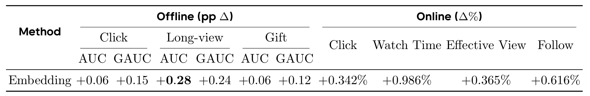
左半是相对于工业基础排序的 AUC、GAUC 绝对百分点变化，右半是在线相对百分比变化，两个单位不能混用。基础系统已经包含多模态特征、MMoE 和 SARM，因此这是现有语义增强链路上的增量。正向理由接入后，点击 AUC 加零点零六个百分点、GAUC 加零点一五；长观看分别加零点二八和零点二四，礼物分别加零点零六和零点一二。长观看的离线提升更突出，符合理由特征试图补充更细内容吸引因素的动机，但表本身没有把提升按具体理由类型拆开，不能据此确定是哪一种动机最有效。
右侧在线点击相对增加百分之零点三四二，观看时长增加百分之零点九八六，有效观看增加百分之零点三六五，关注增加百分之零点六一六。研究在真实直播流量上开展独立的百分之一实验，结果表明这一整套正向特征路径可以在强基线上带来可测收益。它同时引入可训练理由编码、双向关系交互、MIM 和门控残差，因此缺少逐模块消融时，不能把观看增益全部归功于 MIM，也不能据此证明任意形式的理由文本拼接会获得相同效果。
训练和测试使用三十秒滑动窗口的生产数据，按最后一天测试、之前训练划分，作者理由每日刷新。线上说明强调维持原延迟预算、已经全量运行三十多天，但全量运行时长不等于此次 A/B 观察时长；论文没有列出各指标置信区间、实验精确日期、桶级稳定性或额外总算力。对繁忙工业系统而言，在旧预算内获得增量是有意义的信息，却不等于新增特征零成本。不同策略是否影响曝光分布、直播供给和用户选择，也需要更长周期及分层数据来判断。表中观看和关注改善可以支持参与度收益，不能自动升级成已证明长期留存显著改善。
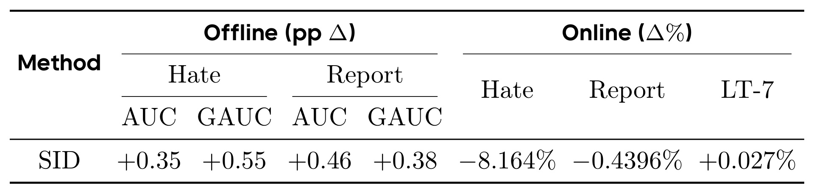
负向分支的离线指标包括 Hate 与 Report；前者是点击不感兴趣，后者为举报，两者的频度和语义强度不同。Hate AUC、GAUC 分别加零点三五和零点五五个百分点，Report 分别加零点四六和零点三八。举报更加稀疏，作者认为跨作者理由共享有助于缓解单个作者反馈不足，这个机制解释合理，但这张表没有直接按历史长度或冷启动程度验证，不能把稀疏性解释当成完成了因果消融。比较两任务 AUC 的数值增益也不代表举报绝对少了更多条，因为基准率与预测难度不同。
在线 Hate 相对下降百分之八点一六四，Report 一栏写负百分之零点四三九六，LT-7 写正百分之零点零二七。原正文将 Report 的变化称为 absolute drop，而表头和 caption 明确标成百分比变化；本笔记按表格保留为相对变化，并披露这一口径冲突，不将它转换成绝对百分点。没有基线举报率就无法在两种解释之间自行换算。LT-7 变化非常小，也未报告显著性，不适合将其写成明确长期留存突破。负反馈减少应同时检查是体验改善，还是曝光、按钮使用或反馈人群发生了改变；本文提供了生产实验方向，但缺少足够分解来排除所有替代解释。
这一路与正向路径分别开展独立百分之一真实流量 A/B，不能把 Table 6 和 Table 7 的增益相加为“总收益”，也不能默认二者组合上线就保持各自边际效果。负向语义码在历史拒绝对象与新候选之间迁移，最应关注的潜在代价是过度泛化：例如用户不喜欢某次夸张营销，并不等于不喜欢所有同类主播。作者同时保留 AID 和多级前缀，有助于让排序学习区分个体与语义共性，但是否误伤特定类别仍需分层指标。报告中的全量日更部署说明路径可工程化，不替代对码本更新、历史特征版本和长期用户反馈回路的稳定性检验。
4. 总结
4.1 对方法价值的判断
SARA 最值得保留的贡献是把偏好理由从解释性输出变成了一条有来源、有审核、有扩展、有排序消费方式的数据链。原生问卷提供行为日志缺少的语言监督；作者级聚合接受个体理由过稀疏这一现实；生成模型把覆盖扩到千万作者；正向对齐和负向语义共享再把文字变为可训练的表示。这个完整路径比单独展示大模型能写好理由更接近工业推荐的问题，因为真正限制上线的不仅是语言质量，还包括覆盖、反馈密度和服务结构。
我的判断是，数据引擎和下游消费设计的证据强于“准确识别每个用户为何拒绝”的解释。论文自己明确生成理由是作者共享的代理信号，这个边界必须保持。正向 MIM 引入批内理由相似性，避免把同义理由全部当负例；负向前缀码在身份记忆与语义迁移之间提供多个共享尺度。两种设计都可迁移到其他内容推荐，但迁移对象应是监督与共享结构，而不是把本文的具体线上百分比当预期收益。
4.2 局限与后续验证
第一，采样存在十秒留存、主动回应、奖励和动态投放造成的多重选择；有效回答并不代表整个用户群的偏好分布，尤其快速离开的用户可能缺席。第二，作者级平均只有少量问卷，聚合后扩大到千万作者会放大生成依赖，细分长尾与新场景的依据可靠性仍需审查。第三，离线清洗、偏好训练和评价使用共同规范，固定评审虽避免检查点随意变化，仍不能消除“学会迎合共同裁判”的风险，需要独立人工与真实反馈补充。
第四，在线表缺少置信区间、详细实验时长、模块消融和代价分解，且 Report 的正文与表头单位冲突；因此能确认有作者报告的增量结果，无法独立估计全部统计稳定性与投入产出。第五，理由聚类相似不等于用户拒绝原因相同，负向语义共享可能造成不必要的跨作者抑制；曝光减少后收集到的新反馈也会变化，形成数据反馈循环。第六，原案例中的金融或医疗文本即使与直播内容相符，也不代表其现实专业主张真实；“依据直播上下文”与“外部事实正确”是两个审核层次，不宜合并。
后续最应优先做三类验证。首先按用户响应倾向、作者热度和类别报告质量与收益，比较当前问卷策略和更均匀的随机邀约，以明确采样偏差会影响哪些服务群体。其次将直接拼接理由、去掉 MIM、去掉门控残差、只用作者 ID、不同前缀层数分别对照，并测试替换为普通内容描述后收益是否消失，才能确定理由监督的独特贡献。最后增加按时间隔离的人类审查与负面误伤指标，跟踪同一作者内容变化后旧理由何时过期、码本更新是否使历史路径失配，以及负反馈降低有没有伴随内容多样性或供给受损。
复现时需要先冻结数据快照、作者划分、评审规则和 BGE 编码约定，再检查问卷目标是否从生成输入彻底排除。QR-DPO 应记录候选采样温度、数量与最好最差选择规则；排序应分别报告正负路线的服务成本和实验桶，保留绝对百分点与相对百分比的区别。公开材料尚不足以重建全部生产训练和评审细节，所以可以复现其结构性思想，但不能宣称已经复现快手线上数字。本文给出的方向很具体：用真实表达校准生成，以排序指标检查语言信号，而把个体动机、统计显著性与长期影响留在仍需验证的位置。